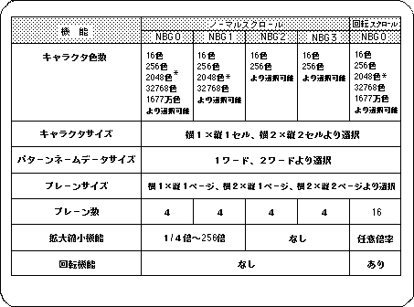

Return to previous page | Return to menu | Go to next page
In this item, the scroll setting method will be explained in order from the character unit, and finally the map setting will be explained. In SGL, scroll functions (number of character colors, character size, etc.) are set at each stage of scroll setting.
The table below shows a list of scroll functions.

Note) * indicates 2048 colors when the color RAM mode is mode 1.
* In the case of mode 0 or mode 2, it is 1024 colors.
The list of functions listed in Table 8-6 is a display of the functions for each scroll plane. In fact, when using these scroll planes in a program, the maximum performance of each scroll plane is not necessarily available, and not all scroll planes can be drawn simultaneously.
This is caused by restrictions on access to VRAM, and the number of scroll planes and functions that can be used simultaneously are limited by this access restriction.
For details on access restrictions, refer to “HARDWARE MANUAL vol.2: VDP2 User's Manual”.
In addition to the VRAM access specification restriction, there is also a scroll drawing restriction that comes from the character color setting of the normal scroll screen “NBG0-3”.
(See character pattern section)
With these two restrictions, the number of scroll planes that can be drawn simultaneously and their functions are limited and determined.